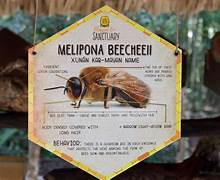

La abeja melipona (Melipona beecheii), conocida en maya como Xunaan-Kab (la "Señora de las Abejas"), es una de las especies más fascinantes y simbólicas del mundo de la apicultura, especialmente en la península de Yucatán.A diferencia de la abeja común (Apis mellifera), estas abejas no tienen aguijón, lo que las hace únicas en su manejo y biología. 1. Características BiológicasAusencia de aguijón: Tienen un aguijón atrofiado, por lo que no pican. Para defenderse, muerden o depositan propóleo sobre sus atacantes.Tamaño: Son pequeñas, generalmente de entre 8 y 15 mm.Nidificación: Construyen sus nidos en cavidades de árboles huecos (jobones) o cajas tecnificadas.Organización: Viven en colonias con una reina, obreras y zánganos, pero sus poblaciones son más pequeñas que las de las abejas europeas (unas miles frente a decenas de miles). 2. La Miel de Melipona: Un Tesoro LíquidoLa miel de melipona es muy distinta a la convencional:Propiedades Medicinales: Se utiliza tradicionalmente para tratar problemas de la vista (cataratas, carnosidad), afecciones respiratorias y cicatrización de heridas.Textura y Sabor: Es más fluida (tiene mayor contenido de humedad) y posee un sabor más ácido y floral. Producción Limitada: Una colmena de melipona produce entre 1 y 2 litros de miel al año, mientras que una colmena de Apis mellifera puede producir hasta 30 o 50 litros.3. Importancia Cultural y EcológicaLegado Maya: Para la cultura maya, la melipona era sagrada. Se realizaban ceremonias anuales en su honor y se consideraba un vínculo con el mundo espiritual.Polinización Especializada: Son polinizadores clave para la selva tropical y cultivos específicos como la vainilla, el achiote y diversos árboles frutales nativos que las abejas grandes no pueden polinizar eficazmente.4. Diferencias PrincipalesCaracterísticaAbeja MeliponaAbeja Comuna (Apis)AguijónNo tiene (inofensiva)Sí tiene (pica)Almacenamiento En ánforas de cera/propóleoEn panales de cera hexagonalesHumedad mielAlta (fermenta fácil)BajaUso principalMedicinal y ritualAlimenticio e industrial Datos CuriososEl Jobón: Tradicionalmente se crían en troncos huecos tapados con piedras o madera en los extremos.Entrada del nido: Suelen construir una entrada de barro y resina que solo permite el paso de una abeja a la vez para proteger la colonia.